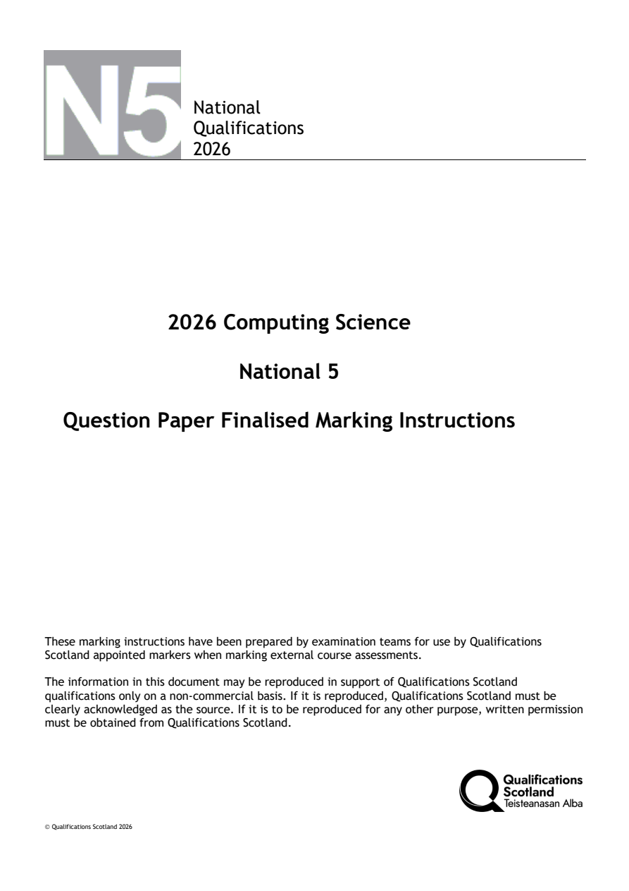
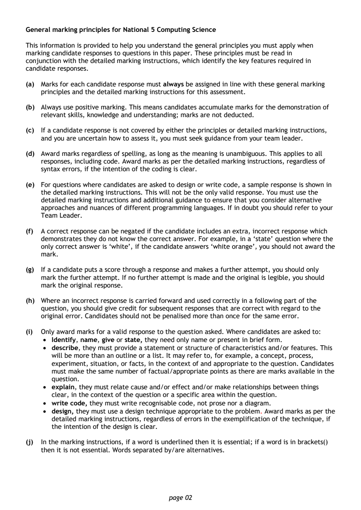
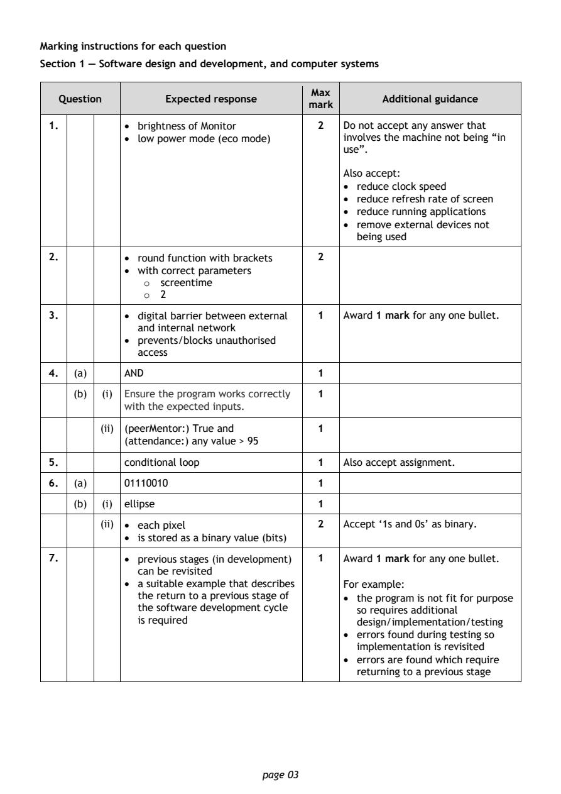
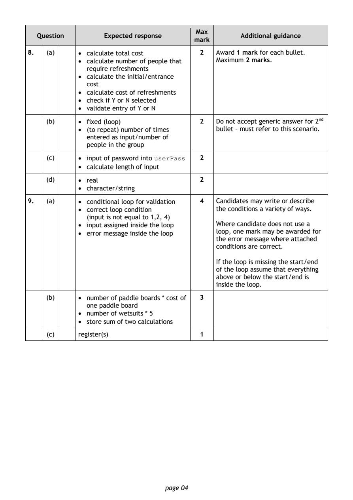
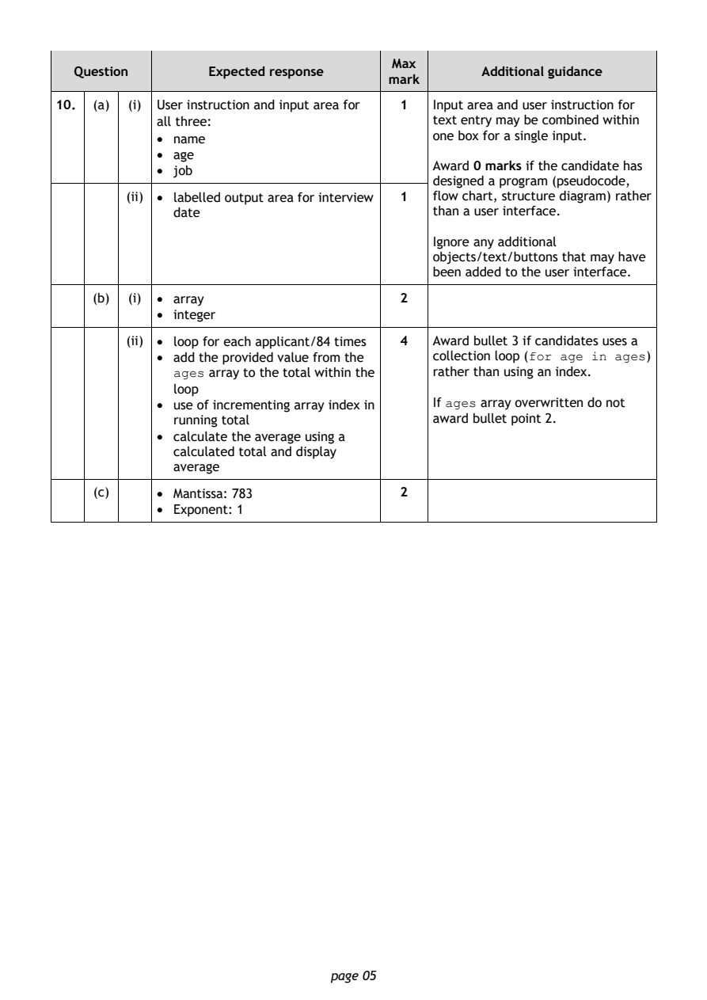
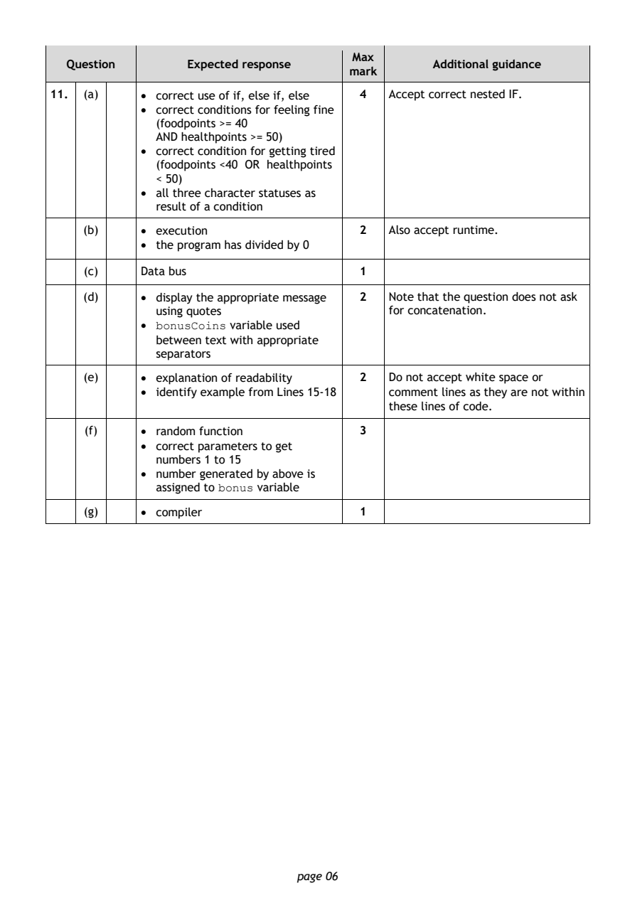
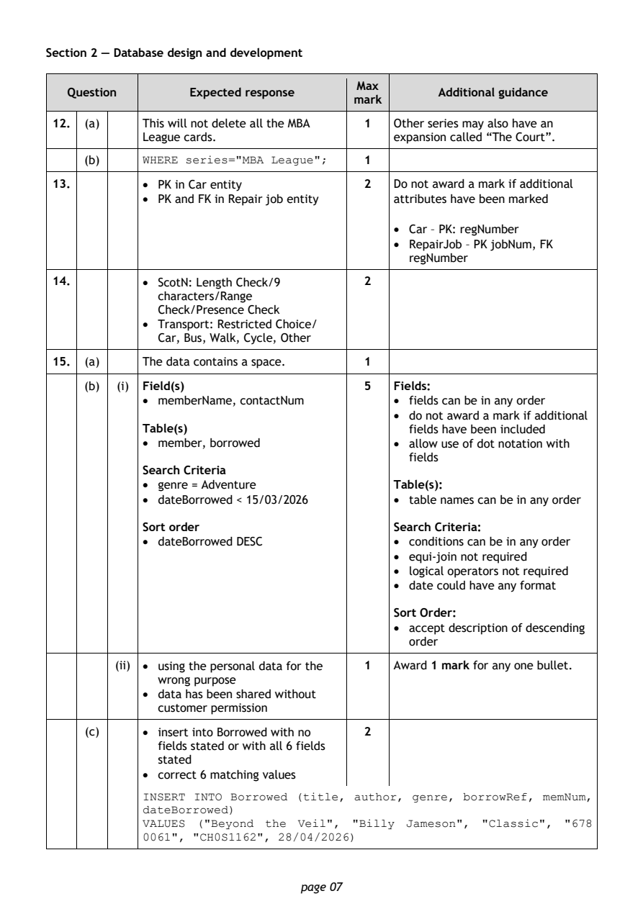
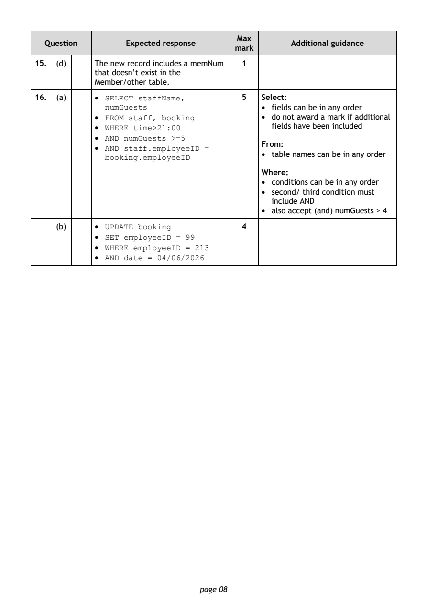
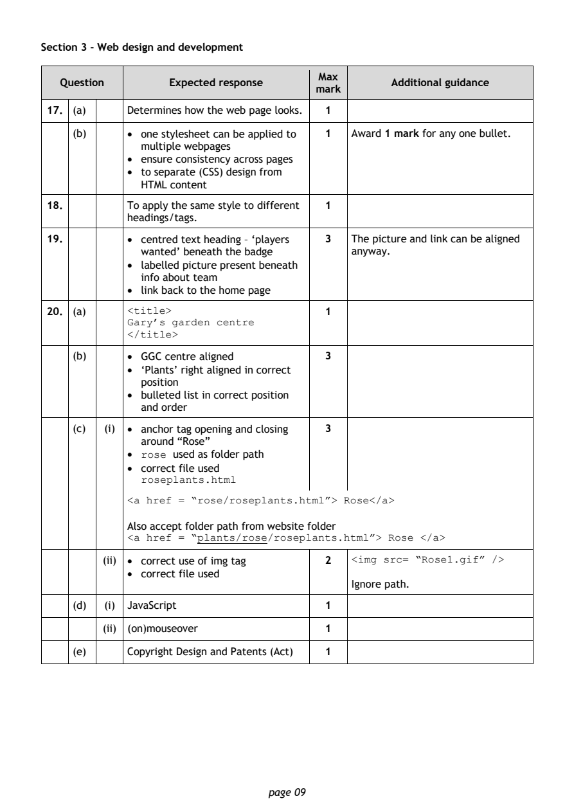
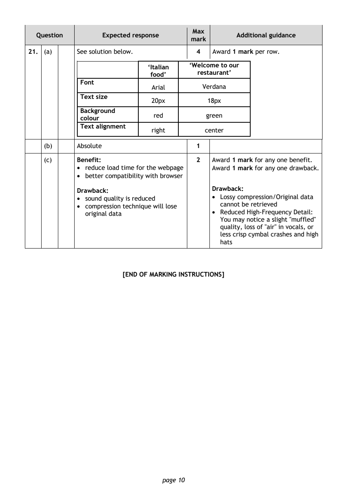

2026 National 5 Computing Science marking instructions
Source: Scottish Qualifications Authority (SQA) / Qualifications Scotland. This is a StemInteract HTML companion, not an official HTML edition. Selectable text is supplied alongside original page images. Use the images or original PDF for equations, powers, fractions, vector notation, tables and diagrams; text extraction cannot fully preserve mathematical layout.
Jump to a question
PDF page 1

Selectable page text
National
Qualifications
2026
2026 Computing Science
National 5
Question Paper Finalised Marking Instructions
These marking instructions have been prepared by examination teams for use by Qualifications
Scotland appointed markers when marking external course assessments.
The information in this document may be reproduced in support of Qualifications Scotland
qualifications only on a non-commercial basis. If it is reproduced, Qualifications Scotland must be
clearly acknowledged as the source. If it is to be reproduced for any other purpose, written permission
must be obtained from Qualifications Scotland.
© Qualifications Scotland 2026PDF page 2

Selectable page text
General marking principles for National 5 Computing Science
This information is provided to help you understand the general principles you must apply when
marking candidate responses to questions in this paper. These principles must be read in
conjunction with the detailed marking instructions, which identify the key features required in
candidate responses.
(a) Marks for each candidate response must always be assigned in line with these general marking
principles and the detailed marking instructions for this assessment.
(b) Always use positive marking. This means candidates accumulate marks for the demonstration of
relevant skills, knowledge and understanding; marks are not deducted.
(c) If a candidate response is not covered by either the principles or detailed marking instructions,
and you are uncertain how to assess it, you must seek guidance from your team leader.
(d) Award marks regardless of spelling, as long as the meaning is unambiguous. This applies to all
responses, including code. Award marks as per the detailed marking instructions, regardless of
syntax errors, if the intention of the coding is clear.
(e) For questions where candidates are asked to design or write code, a sample response is shown in
the detailed marking instructions. This will not be the only valid response. You must use the
detailed marking instructions and additional guidance to ensure that you consider alternative
approaches and nuances of different programming languages. If in doubt you should refer to your
Team Leader.
(f) A correct response can be negated if the candidate includes an extra, incorrect response which
demonstrates they do not know the correct answer. For example, in a ‘state’ question where the
only correct answer is ‘white’, if the candidate answers ‘white orange’, you should not award the
mark.
(g) If a candidate puts a score through a response and makes a further attempt, you should only
mark the further attempt. If no further attempt is made and the original is legible, you should
mark the original response.
(h) Where an incorrect response is carried forward and used correctly in a following part of the
question, you should give credit for subsequent responses that are correct with regard to the
original error. Candidates should not be penalised more than once for the same error.
(i) Only award marks for a valid response to the question asked. Where candidates are asked to:
• Identify, name, give or state, they need only name or present in brief form.
• describe, they must provide a statement or structure of characteristics and/or features. This
will be more than an outline or a list. It may refer to, for example, a concept, process,
experiment, situation, or facts, in the context of and appropriate to the question. Candidates
must make the same number of factual/appropriate points as there are marks available in the
question.
• explain, they must relate cause and/or effect and/or make relationships between things
clear, in the context of the question or a specific area within the question.
• write code, they must write recognisable code, not prose nor a diagram.
• design, they must use a design technique appropriate to the problem. Award marks as per the
detailed marking instructions, regardless of errors in the exemplification of the technique, if
the intention of the design is clear.
(j) In the marking instructions, if a word is underlined then it is essential; if a word is in brackets()
then it is not essential. Words separated by/are alternatives.
page 02PDF page 3
Question 1Question 2Question 3Question 4Question 5Question 6Question 7
Selectable page text
Marking instructions for each question
Section 1 — Software design and development, and computer systems
Max
Question Expected response Additional guidance
mark
1. • brightness of Monitor 2 Do not accept any answer that
• low power mode (eco mode) involves the machine not being “in
use”.
Also accept:
• reduce clock speed
• reduce refresh rate of screen
• reduce running applications
• remove external devices not
being used
2. • round function with brackets 2
• with correct parameters
o screentime
o 2
3. • digital barrier between external 1 Award 1 mark for any one bullet.
and internal network
• prevents/blocks unauthorised
access
4. (a) AND 1
(b) (i) Ensure the program works correctly 1
with the expected inputs.
(ii) (peerMentor:) True and 1
(attendance:) any value > 95
5. conditional loop 1 Also accept assignment.
6. (a) 01110010 1
(b) (i) ellipse 1
(ii) • each pixel 2 Accept ‘1s and 0s’ as binary.
• is stored as a binary value (bits)
7. • previous stages (in development) 1 Award 1 mark for any one bullet.
can be revisited
• a suitable example that describes For example:
the return to a previous stage of • the program is not fit for purpose
the software development cycle so requires additional
is required design/implementation/testing
• errors found during testing so
implementation is revisited
• errors are found which require
returning to a previous stage
page 03PDF page 4
Question 8Question 9
Selectable page text
Max
Question Expected response Additional guidance
mark
8. (a) • calculate total cost 2 Award 1 mark for each bullet.
• calculate number of people that Maximum 2 marks.
require refreshments
• calculate the initial/entrance
cost
• calculate cost of refreshments
• check if Y or N selected
• validate entry of Y or N
(b) • fixed (loop) 2 Do not accept generic answer for 2nd
• (to repeat) number of times bullet – must refer to this scenario.
entered as input/number of
people in the group
(c) • input of password into userPass 2
• calculate length of input
(d) • real 2
• character/string
9. (a) • conditional loop for validation 4 Candidates may write or describe
• correct loop condition the conditions a variety of ways.
(input is not equal to 1,2, 4)
• input assigned inside the loop Where candidate does not use a
• error message inside the loop loop, one mark may be awarded for
the error message where attached
conditions are correct.
If the loop is missing the start/end
of the loop assume that everything
above or below the start/end is
inside the loop.
(b) • number of paddle boards * cost of 3
one paddle board
• number of wetsuits * 5
• store sum of two calculations
(c) register(s) 1
page 04PDF page 5
Question 10
Selectable page text
Max
Question Expected response Additional guidance
mark
10. (a) (i) User instruction and input area for 1 Input area and user instruction for
all three: text entry may be combined within
• name one box for a single input.
• age
Award 0 marks if the candidate has
• job
designed a program (pseudocode,
(ii) • labelled output area for interview 1 flow chart, structure diagram) rather
date than a user interface.
Ignore any additional
objects/text/buttons that may have
been added to the user interface.
(b) (i) • array 2
• integer
(ii) • loop for each applicant/84 times 4 Award bullet 3 if candidates uses a
• add the provided value from the collection loop (for age in ages)
ages array to the total within the rather than using an index.
loop
• use of incrementing array index in If ages array overwritten do not
running total award bullet point 2.
• calculate the average using a
calculated total and display
average
(c) • Mantissa: 783 2
• Exponent: 1
page 05PDF page 6
Question 11
Selectable page text
Max
Question Expected response Additional guidance
mark
11. (a) • correct use of if, else if, else 4 Accept correct nested IF.
• correct conditions for feeling fine
(foodpoints >= 40
AND healthpoints >= 50)
• correct condition for getting tired
(foodpoints <40 OR healthpoints
< 50)
• all three character statuses as
result of a condition
(b) • execution 2 Also accept runtime.
• the program has divided by 0
(c) Data bus 1
(d) • display the appropriate message 2 Note that the question does not ask
using quotes for concatenation.
• bonusCoins variable used
between text with appropriate
separators
(e) • explanation of readability 2 Do not accept white space or
• identify example from Lines 15-18 comment lines as they are not within
these lines of code.
(f) • random function 3
• correct parameters to get
numbers 1 to 15
• number generated by above is
assigned to bonus variable
(g) • compiler 1
page 06PDF page 7
Question 12Question 13Question 14Question 15
Selectable page text
Section 2 — Database design and development
Max
Question Expected response Additional guidance
mark
12. (a) This will not delete all the MBA 1 Other series may also have an
League cards. expansion called “The Court”.
(b) WHERE series="MBA League"; 1
13. • PK in Car entity 2 Do not award a mark if additional
• PK and FK in Repair job entity attributes have been marked
• Car – PK: regNumber
• RepairJob – PK jobNum, FK
regNumber
14. • ScotN: Length Check/9 2
characters/Range
Check/Presence Check
• Transport: Restricted Choice/
Car, Bus, Walk, Cycle, Other
15. (a) The data contains a space. 1
(b) (i) Field(s) 5 Fields:
• memberName, contactNum • fields can be in any order
• do not award a mark if additional
Table(s) fields have been included
• member, borrowed • allow use of dot notation with
fields
Search Criteria
• genre = Adventure Table(s):
• dateBorrowed < 15/03/2026 • table names can be in any order
Sort order Search Criteria:
• dateBorrowed DESC • conditions can be in any order
• equi-join not required
• logical operators not required
• date could have any format
Sort Order:
• accept description of descending
order
(ii) • using the personal data for the 1 Award 1 mark for any one bullet.
wrong purpose
• data has been shared without
customer permission
(c) • insert into Borrowed with no 2
fields stated or with all 6 fields
stated
• correct 6 matching values
INSERT INTO Borrowed (title, author, genre, borrowRef, memNum,
dateBorrowed)
VALUES ("Beyond the Veil", "Billy Jameson", "Classic", "678
0061", "CH0S1162", 28/04/2026)
page 07PDF page 8
Question 16
Selectable page text
Max
Question Expected response Additional guidance
mark
15. (d) The new record includes a memNum 1
that doesn’t exist in the
Member/other table.
16. (a) • SELECT staffName, 5 Select:
numGuests • fields can be in any order
• FROM staff, booking • do not award a mark if additional
• WHERE time>21:00 fields have been included
• AND numGuests >=5
From:
• AND staff.employeeID =
• table names can be in any order
booking.employeeID
Where:
• conditions can be in any order
• second/ third condition must
include AND
• also accept (and) numGuests > 4
(b) • UPDATE booking 4
• SET employeeID = 99
• WHERE employeeID = 213
• AND date = 04/06/2026
page 08PDF page 9
Question 17Question 18Question 19Question 20
Selectable page text
Section 3 - Web design and development
Max
Question Expected response Additional guidance
mark
17. (a) Determines how the web page looks. 1
(b) • one stylesheet can be applied to 1 Award 1 mark for any one bullet.
multiple webpages
• ensure consistency across pages
• to separate (CSS) design from
HTML content
18. To apply the same style to different 1
headings/tags.
19. • centred text heading – ‘players 3 The picture and link can be aligned
wanted’ beneath the badge anyway.
• labelled picture present beneath
info about team
• link back to the home page
20. (a) <title> 1
Gary’s garden centre
</title>
(b) • GGC centre aligned 3
• ‘Plants’ right aligned in correct
position
• bulleted list in correct position
and order
(c) (i) • anchor tag opening and closing 3
around “Rose”
• rose used as folder path
• correct file used
roseplants.html
<a href = “rose/roseplants.html”> Rose</a>
Also accept folder path from website folder
<a href = “plants/rose/roseplants.html”> Rose </a>
(ii) • correct use of img tag 2 <img src= “Rose1.gif” />
• correct file used
Ignore path.
(d) (i) JavaScript 1
(ii) (on)mouseover 1
(e) Copyright Design and Patents (Act) 1
page 09PDF page 10
Question 21
Selectable page text
Max
Question Expected response Additional guidance
mark
21. (a) See solution below. 4 Award 1 mark per row.
‘Italian ‘Welcome to our
food’ restaurant’
Font
Arial Verdana
Text size
20px 18px
Background
red green
colour
Text alignment
right center
(b) Absolute 1
(c) Benefit: 2 Award 1 mark for any one benefit.
• reduce load time for the webpage Award 1 mark for any one drawback.
• better compatibility with browser
Drawback: Drawback:
• sound quality is reduced • Lossy compression/Original data
cannot be retrieved
• compression technique will lose
original data • Reduced High-Frequency Detail:
You may notice a slight "muffled"
quality, loss of "air" in vocals, or
less crisp cymbal crashes and high
hats
[END OF MARKING INSTRUCTIONS]
page 10